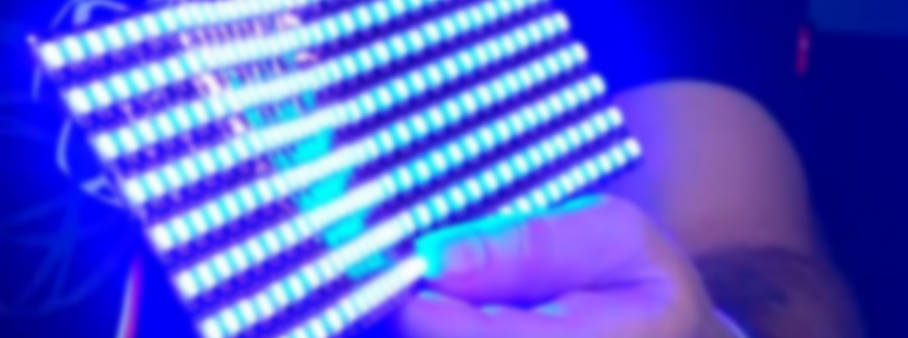

LED Display Board

1. Individually addressable WS2812b 60led/m rgb dream color led pixel strip.
2. The power supply depends on the length of the LED we use. The rating of the power supply will be to supply 2A with a voltage 12V. This will provide the required current to the LEDs.
3. Hard Board
• Wooden frame can be taken from workshop
• Readymade cardboard frame
• Advantage of using this is that it would be hard and longer life
4. The coding will be done on Arduino. The library for this will be neopixel. Each led can be addressed by providing the number of LED in each row. It requires a single port to control the length specified. Each row of the LED can be connected in cross way or in continuation.
5. Initially the Bluetooth communication will be used. It have a range of approx. 10 meters and uses the protocol of RFCOMM (Radio Frequency Communication).
6. The matrix formed can be laminated by plastic or covered by glass. This increases the life of the display and make it more presentable.